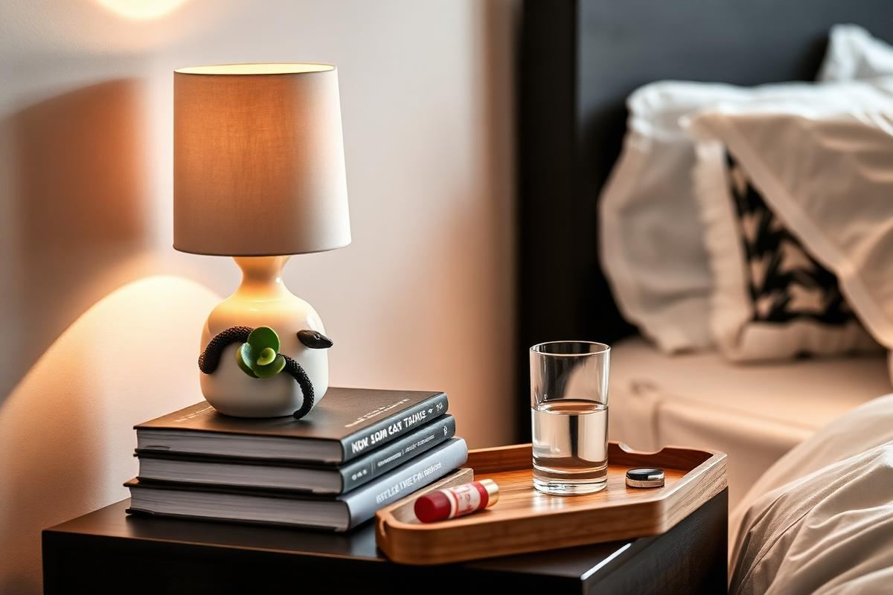

How to Style a Bedside Table (5 Simple Rules)

How to Style a Bedside Table (5 Simple Rules) is one of those topics where a little planning goes a long way. In this guide I walk through the process we use in real homes — not just what looks good in a photo, but what actually holds up over time.
Start here
Before you buy or move anything, measure the space and note how you actually use it. The best-looking room is one that matches how you live, so start with the routines: where you sit, where you drop keys, where the light falls in the afternoon.
The essentials
Focus on the pieces that do the most work. Get those right and the rest of the room comes together with much less effort. Aim for materials that patina rather than degrade, and colors you will still like in five years.
- Choose one clear focal point per room.
- Pick materials that improve with age.
- Layer textures instead of adding more colors.
- Leave visual breathing room — negative space is a design element.
Common mistakes
The mistakes we see most often are matching everything too tightly, over-scaling accessories, and skipping proper lighting. Fix those three and most rooms improve overnight.

Lighting the Way: Choosing the Right Lamp
Beyond aesthetics, your bedside lamp is a crucial functional element. The right height is paramount for both reading comfort and visual balance. A good rule of thumb is that the bottom of the lampshade should be roughly at your shoulder height when seated in bed. For a typical 26-inch high mattress and standard frame, this often translates to a lamp that stands between 24-30 inches tall from base to finial. Consider the shade's diameter; it shouldn't extend past the width of your bedside table if possible, typically 10-14 inches for most tables. Materials like ceramic, detailed brass, or even a frosted glass base can elevate the look without overwhelming the space. For smart homes, consider lamps with integrated USB charging ports or touch dimming capabilities, an overlooked convenience that streamlines your evening routine.
Lamp Style Considerations
- Shade material: Linen or silk diffuses light softly; opaque shades direct light.
- Base material: Wood for warmth, metal for modern, ceramic for texture.
- Switch type: Rotary for traditional, touch for contemporary simplicity, pull-chain for vintage charm.
- Smart features: USB ports, dimmers, or smart bulb compatibility for personalized control.
Curated Comfort: The Personal Touch
This is where your bedside table truly becomes a reflection of you. Resist the urge to clutter it with everything you own. Instead, focus on 1-3 highly personal items that bring you joy or serve a specific purpose. A small framed photograph (3x5 or 4x6 inches is ideal) of a cherished memory, perhaps in a simple brass or matte black frame, adds warmth without visual noise. A small, sculptural object like a hand-carved wooden bird, a smooth river stone, or a delicate ceramic piece can act as an anchor. Avoid bringing in items that are purely decorative and lack meaning; the goal is curated comfort, not a museum display. Think about items that reflect your hobbies or travels, rather than generic store-bought trinkets.
Adding Personal Flair
For avid readers, a single, beautifully bound novel or a current magazine can be a stylish placeholder until your next reading session. If you enjoy journaling, a small notebook and a elegant pen can be kept within reach. The key is intentionality. Each item should have a reason for being there, whether it's functional, sentimental, or purely about adding a specific texture or color that enhances the room's palette. Aim for items that are easily moved or cleaned, preventing dust accumulation in high-traffic spots. A small, scentless aromatherapy diffuser is another personal touch, emitting a subtle, calming fragrance.
The Art of Layering: Texture and Height
Successful bedside table styling relies heavily on varying heights and incorporating diverse textures. This prevents a flat, uninteresting arrangement. Think in terms of three distinct height zones: a tall anchor (your lamp), a mid-height element (a small plant, a stack of books), and a low, grounding item (a coaster, a small dish). For textures, juxtapose smooth ceramic with ribbed glass, polished metal with natural wood, or a soft linen tray with a hard-bound book. For example, a polished concrete lamp base (hard) paired with a woven wicker coaster (textured) and a glass carafe (smooth/transparent) creates dynamic visual interest. Don't be afraid to mix materials; a bedside table isn't meant to be homogenous.
Achieving Visual Balance
Consider the visual weight of items. A substantial ceramic lamp can be balanced by lighter, airier elements below it. If your table is small, opt for fewer, more impactful pieces. A simple stack of two or three books, chosen for their cover art or color, can serve as a mid-height element, adding both texture and a personal touch. A small, neatly folded linen hand towel under a carafe of water can introduce softness. Aim for a triangular arrangement; arranging items at different heights naturally draws the eye across the display and creates a sense of harmony. Avoid having all items at roughly the same height, which can feel monotonous and static.
Practical Perfection: Storage Solutions
Even the most aesthetically pleasing bedside table can fall short if it doesn't offer practical storage for your nightly necessities. If your table lacks drawers, consider elegant ways to contain clutter. A small, shallow tray – perhaps a 6x9 inch marble or wooden option – can corral lip balm, hand cream, earbuds, and hair ties. For larger items, a decorative box (around 4x6x2 inches) with a lid can hide charging cables or reading glasses out of sight. Remember, visible clutter detracts from even the most thoughtful styling. The key is to make these storage solutions part of the aesthetic, not just an afterthought. Prices for good quality trays can range from $15-$45, while decorative boxes are typically $20-$60.
Smart Storage Integration
For those who need to store more, consider a bedside table with integrated drawers. A single, smooth-gliding drawer can make a significant difference. If your table is open, a stylish woven basket (e.g., 8-10 inches diameter) tucked underneath can hold larger items like a throw blanket, magazines, or extra pillows. The goal is to keep surfaces clear and visually appealing while ensuring everything you need is easily accessible. Avoid plastic organizing bins; opt for natural materials like rattan, seagrass, or felt, which add texture and warmth to the bedroom decor. A small catch-all bowl, perhaps a 4-inch ceramic dish, is perfect for rings or small jewelry before bed.
The Power of Greens: Introducing Botanicals
A live plant or fresh flowers can instantly revitalize a bedside table, adding life and a pop of color. Choose small, low-maintenance options that don't emit strong scents, which can be disruptive to sleep. A 4-6 inch potted snake plant (Sansevieria), ZZ plant (Zamioculcas zamiifolia), or pothos (Epipremnum aureum) are excellent choices for their resilience and air-purifying qualities. Place them in a chic ceramic or terracotta planter to elevate their impact. Alternatively, a small vase (e.g., 6-8 inches tall with a narrow opening) holding 1-3 fresh stems – a single rose, eucalyptus sprig, or chamomile flowers – can provide a delicate touch of nature. Change water daily for fresh cuts to avoid stagnant odors.
Botanical Styling Tips
Ensure the plant's pot is sized appropriately for the table; avoid anything that overwhelms the surface. Moss balls in a small dish also offer a low-maintenance, organic element without the need for watering. If fresh flowers aren't practical, high-quality faux botanicals can offer a similar aesthetic without the upkeep. Look for 'real touch' varieties that mimic natural textures. A small succulent planter (3-4 inches) can introduce vibrant green without demanding much space. Always use a coaster or felt pad underneath planters to protect your table's surface from moisture, especially with terracotta or unglazed ceramics. This small preventative measure can save your furniture from water rings and stains.
Key takeaways
- Match the room to how you actually live.
- Anchor with one main piece and clear lighting.
- Layer textures, not colors.
- Leave breathing room around every object.
Frequently asked questions
Where should I start?
Start with the largest piece and the light. Everything else — art, textiles, small objects — is easier to place once those two anchors are set.
What is a realistic budget?
Prioritize the pieces you touch every day. Spend more on those and less on decorative items, which are easy to swap over time.
How long should this last?
A well-chosen main piece should last 10–15 years. Refreshes come through textiles, art, and accessories, not full replacements.

Sophia Bennett is a certified interior stylist and the senior editor at Styleire. She has spent more than eight years helping homeowners and renters create warm, functional interiors, with hands-on experience across small city apartments and family homes. Her work has been informed by close collaboration with independent designers, craftspeople, and product testers.
View full profile →Related reading

Cozy Bedroom Ideas: 12 Changes That Actually Make a Difference
Cozy is a feeling built from small, specific choices. Here are the twelve that make the biggest difference.

Small Bedroom Layout Ideas That Free Up Floor Space
A small bedroom does not need to feel cramped. It needs a layout that respects the walking path and the light.

How to Choose Bedding That Actually Feels Good
Thread count is mostly noise. Here is what actually determines how bedding feels.